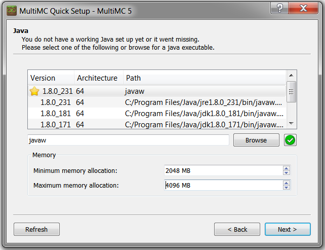

TAG Minecraft Server: Interlude
You can request changes for this page by making Pull Requests to this repo.
As of April 24th, 2021, the current server is Interlude V2.5c.
The following instructions are pulled almost verbatim from the Installation Guide prepared by Nic Watson for Miasma and revised by Michael Iantorno for Imagine No Dragons.
WARNINGS AND DISCLAIMERS
PRIVACY NOTICE: In-game chat messages are forwarded both to the server console (for technical reasons) and to our Discord channel (so that people out-of-game can converse with those in-game). These messages also end up saved in durable records (server logs, which are used for diagnostic purposes; the Discord channel, which keeps past messages unless they are manually purged). Furthermore, our service provider has the technical ability to monitor traffic and access our server logs (this doesn't mean that they will, just that they can). This means that people may be able to listen to your in-game conversations even if they do not appear to be signed in. Do not treat in-game conversation as private, no matter how few people appear to be logged on. Although in-game player-to-player "private messages" are not normally displayed on the server console or Discord, they also have no meaningful software protection to prevent leaks or eavesdropping, so they should not be regarded as secure. We cannot guarantee the privacy or security of any in-game communications.
This is a bit of an experimental server and may be slightly more prone to bugs and crashes than a vanilla Minecraft server. Please be patient with our benevolent server admin!
This modpack is for private distribution and use only. This is necessary in order to keep us in compliance with the licenses and modpack policies of some of the mods included in the pack. Therefore, please do not publicly redistribute or re-host this modpack.
DISCORD: HELP, BUGS, & GENERAL COMMUNICATION
- Please join our Discord in order to keep in touch!
- Check for modpack updates and find the download links (the modpack will be updated periodically, requiring you to update your instance).
- Report bugs, ask questions, or get help with anything in the game that's giving you trouble.
- Communicate with people who are in-game, without having to launch the game yourself.
- If you do not have Discord, you can download it for your platform from https://discordapp.com/download
- Once you have Discord set up, you can use this link to join us: https://discord.gg/suaTWTT
INSTALLATION INSTRUCTIONS
IF YOU HAVE A MOJANG ACCOUNT - Download and setup the MultiMC software
- Download MultiMC, a Minecraft client wrapper that will make it easy for you to manage your mods across different Minecraft versions. https://multimc.org/#Download
- Extract the MultiMC folder from the zip (Windows), tarred gzip (Mac) or other file (Linux) to a place of your choice on your hard drive. The program does not have to be installed anywhere in particular, just unzipped.
- Run the MultiMC.exe program, found inside the MultiMC folder.
- After selecting your language preference, you may be prompted to choose a "Java executable." Usually whatever appears at the top of the list is fine, as long as it has a 1.8.x version number. A 64-bit architecture version is strongly recommended, and should be preferred over a 32-bit one. If nothing appears in this list, if you do not have Java 1.8.x, or if you do not have a 64-bit version, you can install one from https://www.java.com/en/download/manual.jsp. (Windows users: the "Windows Offline (64-bit)" download is recommended.)
- You will also need to set your memory allocation in this window. Set the minimum allocation to 2048 MB, and the maximum to 6144 MB (if you can spare the RAM; 8192 MB is also very good but perhaps overkill).

- The final setup prompt will ask if you wish to allow MultiMC to collect anonymous usage statistics. This is entirely your choice. If you do not want MultiMC to collect any information about your system, make sure to uncheck the box before proceeding.
- Enter your Minecraft login credentials in MultiMC. Click the "Profiles" button in the upper-right corner and select "Manage accounts" from the menu. In the popup window, click the "Add" button on the right-hand side. Enter your Mojang username and password at the prompt.
- Proceed to the instance/modpack download, below.
IF YOU HAVE A MICROSOFT ACCOUNT - Download and setup the CurseForge Launcher software
- Download CurseForge, a Minecraft client wrapper that will make it easy-ish for you to manage your mods across different Minecraft versions. https://multimc.org/#Download
- NOTE: You do NOT need a separate CurseForge/Overwolf account to use this program.
- Download and run the installer to install the program, then launch it.
- On the "Choose a game" screen, select "Minecraft."
- Proceed to the instance/modpack download, below.
Download the Interlude client instance
Download the ZIP file, and save it anywhere on your hard drive.
Do not unpack it!
Interlude V2.5c
(MOJANG ACCOUNTS ONLY) Install the instance in MultiMC.
Click the "Add Instance" button in the upper left-hand corner of the window.
In the pop-up window, select the "Import from zip" option, and use the "Browse" button to locate the zip file you downloaded. After you press OK, MultiMC may appear to hang for a few minutes while it deploys the instance, but it should recover.
An icon for the modpack should now appear in the main MultiMC window. Simply double-click on it to launch the game!
If you are on a mac, you will need to roll back Java:
- Get the right verrsion: 1.8.0_251
- Once that is installed, you'll need to right click and "Edit Instance" the Interlude instance, go to "Settings" tab, check "Java Installation", click Autodetect, and choose version 251 from the list.
(MICROSOFT ACCOUNTS) Install the instance in CurseForge Launcher.
- Click the "Create Custom Profile" button.
- Fill out any old name you like in the Name field.
- Make sure you have Minecraft 1.16.5 and Forge 36.1.4 selected. Click Create and wait for some files to be downloaded
- Right-click on your newly created profile and choose "Open Folder"
- Now open the modpack zip in your favourite zip-file manager, go into the "minecraft" subfolder, and drag "servers.dat" and the "mods" folder into the Overwolf profile folder you just opened.
- Back in the CurseForge Launcher, click Play on your profile.
- After a few moments, the familiar vanilla Minecraft launcher should appear (this is a self-contained version created by the Curse app to manage installation profiles automatically for you).
- You will be prompted to log into your Microsoft account.
- Once in, click the "Installations" tab, and you should see the modpack there. Mouse over the list item, click the three-dots button, and select "Edit"
- Click "More Options" and scroll down to "JVM Arguments."
- Without changing any other part of this text, look for these two strings: "-Xmx4096m" and "-Xms2056m"
- If you can spare at least 6 GB of dedodated wam, change "-Xmx4096m" to "-Xmx6114m" -- even better, 8GB with "-Xmx8192m"
- Change "-Xms256m" to "-Xms2048m"
- Click save to go back to the Installations menu, then click Play
- Proceed to "Connecting to the server" below.
Running the game
Double click on the instance, wait, this might take a while.
Then click on multiplayer. The server should already be listed.
Connecting to the server
The server address is: 204.44.125.19:31337
You can name it anything you want. It should be listed there by default if it's included in the current modpack, but if it's not, this is what you'd add.
Setting up Discord Integration
If you link your MC account to your Discord account in the above channel, you can chat and listen in both at the same time
From inside Minecraft, type:
/discord link [user] [descriminator]
If you click on your name in Discord, see your icon, your in-chat name and then something of the format [user]#[descriminator]. Just use that information with the above command in minecraft and you'll get a message from our bot within discord to verify, then you're connected.
Updating your instance
Occasionally, the modpack will be updated to fix bugs and add new features. When this occurs, an announcement will be made on Discord, along with instructions. The process will be similar to installing the original package and importing the downloaded ZIP (as a new instance into MultiMC, as described in the standard installation instructions in Parts II-III).
Important: This will reset any configuration changes (such as maps and guidelines) you have made. To carry our customizations over to the new instance, you must do the following:
- Close Minecraft if it is running
- Right click on the old instance, and select "Minecraft Folder"
- Do the same for the new instance.
- You should now have two folders open, one for each instance. Take care to remember which is which.
- Copy the file options.txt from the old folder into the new one (overwrite when prompted). This will carry over your primary Minecraft settings and your keyboard controls.
- To keep your Xaero's Minimap (both the map images and waypoints), copy both Xaero folders from the old instance to the new one.
- (Optional) If you customized any other mod-specific options you will need to find the corresponding configuration file in the old instance's config subfolder and copy it to the new instance's config folder.
- You don't have to delete your old instance, but if you choose to, remember to back up any single player worlds and screenshots that might still be stored there.
If the server changes, you have to do extra steps to move your XaeroMap and waypoints:
If you want to keep your old XaeroMap and waypoints. In the following example, the old ip would be 142.4.205.195 and the new one would be 204.44.125.19:
- Connect to new server once.
- Go into your .minecraft folder, then XaeroWaypoints subfolder
- You should see folders Multiplayer_142.4.205.195 and Multiplayer_204.44.125.19. Copy everything from Multiplayer_142.4.205.195 to Multiplayer_204.44.125.19
- Back out to .minecraft folder, go into XaeroWorldMap, and do the same thing.